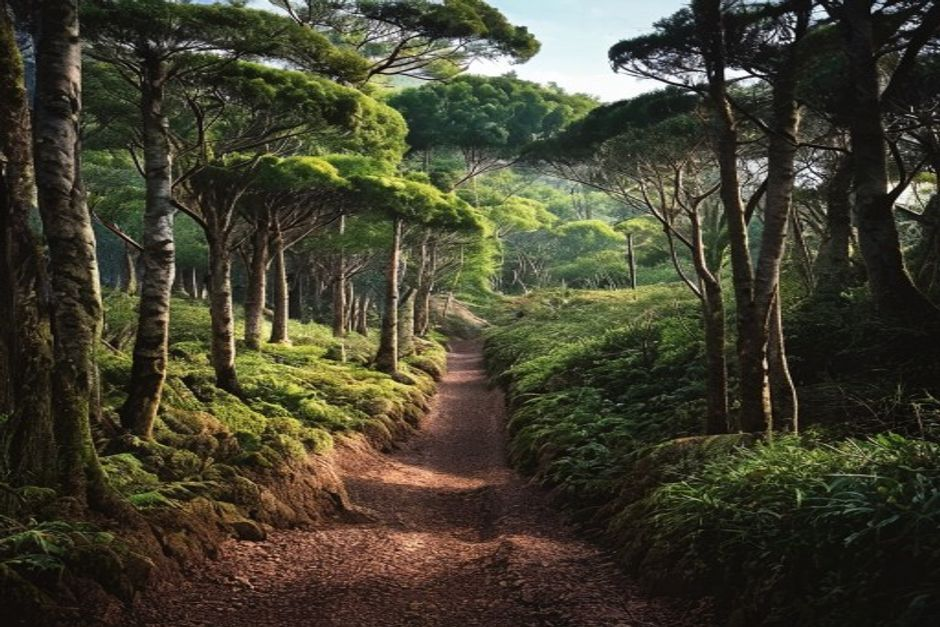
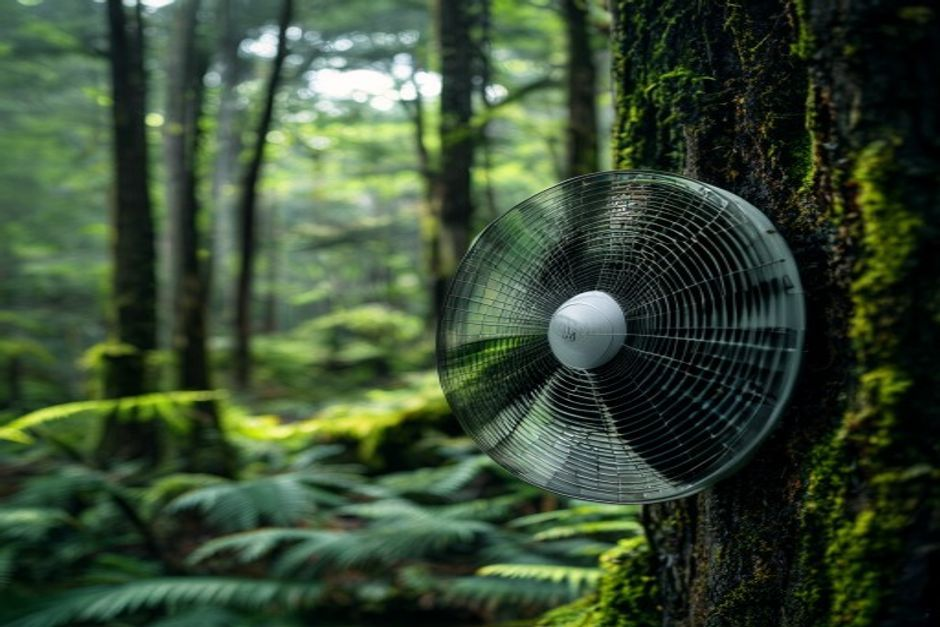

Fanal Forest is a stand of ancient, wind-bent til trees on Madeira's Paul da Serra plateau, at 1,150 metres, almost permanently wrapped in drifting cloud. It's one of the last surviving fragments of the laurel forest that once covered the whole island — and on a foggy morning, it looks like nowhere else in Europe.
What is Fanal Forest?
Fanal is a section of native laurisilva (laurel forest) on the high plateau above Porto Moniz, known for its scattered, centuries-old til trees (Ocotea foetens) — squat, broad-canopied trees whose shapes have been sculpted by decades of wind and grazing cattle. Unlike the dense, closed-canopy laurel forest found lower down the island's north slopes, Fanal is open pasture dotted with these standalone giants, which is exactly what makes it so photogenic: each tree sits alone, ringed by mist, rather than lost in a crowd of others.

Why is Fanal Forest part of a UNESCO World Heritage Site?
Madeira's laurisilva has been inscribed as a UNESCO Natural World Heritage Site since 1999, and Fanal is one of its most intact and visited pockets. The forest that once blanketed most of Macaronesia during the Tertiary period survives today almost nowhere else at this scale — Madeira holds roughly 15,000 hectares of it, the largest remaining area of primary laurel forest anywhere. Fanal's open, grazed character makes it easier to walk through and photograph than the denser laurisilva elsewhere, which is part of why it's become the island's most recognisable example.
Why is Fanal always covered in fog?
Because of where it sits. At around 1,150 metres on the Paul da Serra plateau, Fanal catches the moisture-laden cloud that the northeast trade winds push up against Madeira's central mountains. That cloud condenses and drifts through the plateau for much of the year, which is exactly the humidity the laurisilva depends on to survive. The fog isn't a quirk of bad timing — it's the climate that built the forest, and it can roll in or clear within minutes, so don't be discouraged by grey skies on the drive up.
How do you get to Fanal Forest from Funchal?
By road, in about an hour. The route climbs from Funchal up onto the Paul da Serra plateau before dropping toward Porto Moniz on the ER209, with a signed car park at the Fanal forest shelter (Casa Florestal do Fanal) along the way. The road is sealed the entire distance, but it's a mountain road with tight bends and, often, low cloud — a hire car or private driver is the only realistic way in, since there's no public bus service to the site. Many visitors combine it with the rest of the north coast: Porto Moniz's natural pools and the Seixal viewpoints are both within a short drive.
What will you actually see once you're there?
A short, easy loop of well under a kilometre from the car park takes you through the most photographed cluster of til trees, their trunks often dark with moisture and their canopies flattened by wind into distinctive umbrella shapes. Cattle still graze here, as they have for generations, which keeps the understorey open rather than overgrown. For a longer walk, the vereda do Fanal (PR13) runs about 10km through the wider forest and takes three to four hours — a proper hike rather than a quick stop, and one that pushes further into laurisilva most visitors never see.
When is the best time to visit Fanal Forest?
Early morning generally brings the thickest, most atmospheric fog, while afternoons have a better chance of clear spells that let you see the trees properly. Neither is "better" so much as different — go early for mood and photography, later in the day if you'd rather see the shapes of the trees without mist obscuring them. Spring and autumn tend to bring more dramatic cloud movement than the driest summer weeks, though weather here changes fast regardless of season.
What should you pack, and is it safe to walk there?
Dress warmer than you think you'll need — at 1,150 metres, with wind and fog, it's routinely 8–10°C cooler than Funchal at sea level, even in summer. A waterproof layer and grippy shoes are worth it, since the short loop can be muddy after rain. The main walk is flat and low-risk; the longer PR13 trail requires more preparation and is best treated like any serious hike, with proper footwear, water and a charged phone.
Can you combine Fanal Forest with a day on the water?
Not on the same morning — Fanal is a mountain detour, and the coast is where the rest of a Madeira trip usually happens. Most visitors treat it as a half-day excursion on its own, then save another day for the water: a private boat trip with Chifbay from Funchal Marina covers Cabo Girão, hidden coves and dolphins, which is about as different from misty highland forest as Madeira gets — and part of why the island rewards a few days rather than one.

Most of Madeira's landmarks show you the coast. Fanal shows you what the whole island looked like before people arrived.
Fanal isn't a five-minute photo stop — it's an hour's drive each way for a walk that, on the right morning, feels genuinely otherworldly. If misty, ancient forest is your thing, it earns the detour.